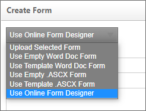

For more information about the Form and it’s properties please refer to the Implementers Reference Guide.
You have three options to create the ASCX control from the Create Form screen. You will find the options in the dropdown at the top of the Create Form screen.

<%@ Control Language="C#" AutoEventWireup="false" Inherits="BPLogix.WorkflowDirector.SDK.bpFormASCX" %>
Once you have created your Form you can upload the Form by selecting “Form Definition” from the “Create New” dropdown selection box. You will be presented with a page to browse and select. You will also have the option to provide a definition name and description.
If you use this option, Process Director will create an ASCX control that contains only basic code required for the control. The basic code consists only of the document declaration at the top of the page, and a <script> tag that contains the stubs for the common Process Director scripting methods.
Once you have created the control, you can use the Check Out and Edit functionality in the Edit tab, and begin working on it in your development environment.

If you use this option, Process Director will create an ASCX control that contains a sample Form with some controls, formatting styles, and other HTML content, in addition to the page declaration and script stubs.
Again, you can edit this form in your development environment after using the Check Out and Edit functionality in the Edit tab.

To develop Forms inside Visual Studio, use the fully functional Visual Studio project installed with the product named bpVS.zip. Refer to the sample files eform_*.aspx.
This section will provide you the basics of developing your eform in Visual Studio 2008. Developing in this environment requires the knowledge to program in ASP.NET. You will be able to use ASP.NET controls as well as extended controls created by BP Logix.
When creating a Form for Process Director, you are actually creating a custom control (.ascx). You create your Form just as if you were creating in the .aspx page. Below you will see the basic structure of the Form.
<%@ Control Language="C#" AutoEventWireup="true" Inherits="BPLogix.WorkflowDirector.SDK.bpFormASCX" %>
<script runat="server">
// Add any events here that will be called as part of the Form
// life-cycle
// See the Custom Scripting / Form Scripts section for more information
</script>
<!--#include file="~/Custom/MyScripts/script.ascx"-->
The .ascx must exist on the server file system and is not controlled by Process Director (via the Content List). A good location for an include file is the /custom/ folder in the Process Director web site installation directory.
In your module placing the public classes into a namespace, such as:
namespace companyname.custom
{
public class MyClass()
{
// … your methods, properties, etc
public static void MyFunc()
{
}
}
}
Then inside a form script call this function using:
companyname.custom.MyClass.MyFunc();